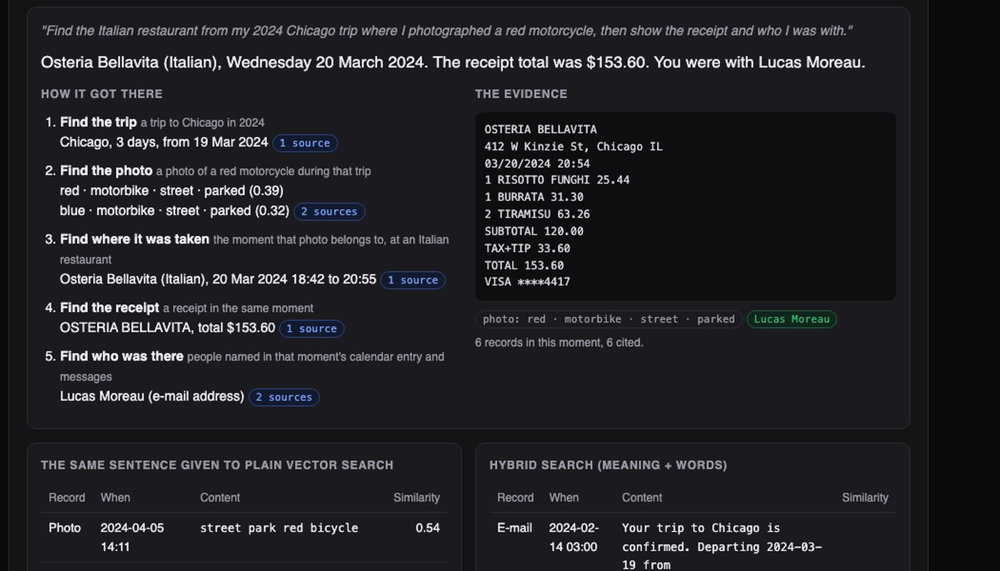
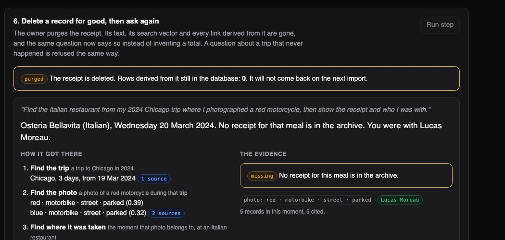

Python · Search · Knowledge graph · 2026-10
Where Did I Eat in Chicago, and Who Was There?
A private search engine over one invented person's photos, receipts, e-mail, calendar and messages. It answers questions that no single record holds by walking from trip to photo to receipt to people, showing every step. On 291 such questions it found the right receipt 93% of the time; ordinary vector search managed 9%.

Built from a written blueprint as one vertical slice, on a generated archive: the person, their contacts and all 2,549 records are invented, so every step can be checked against a known answer. There are no image files: a "photo" is the time, GPS and tags a phone's tagger would produce, and receipts arrive as already-scanned text. No language model and no outside service is used. Not built: real app connectors, image or face recognition, encrypted sync, Kafka, Terraform, single sign-on.
01 — The problem
Years of photos, receipts, e-mails, calendar entries and messages sit in separate apps. The photo of a red motorcycle does not know which restaurant it was taken outside; the receipt does not know who was at the table; the calendar entry has neither. Can software connect them well enough to answer "find the Italian restaurant from my 2024 Chicago trip where I photographed a red motorcycle, then show the receipt and who I was with", without sending anything private to an outside service?
Blueprint 2 of ten in a second build book, built as its demo scenario end to end.
02 — What I built
A Python service on PostgreSQL (with the pgvector extension), a background worker and a web page, started by one docker compose up.
- Indexer: groups records into moments and trips, recovers restaurants from receipts, links names to contacts.
- Search: meaning and exact words combined, all computed locally.
- Step-by-step answers: trip, photo, moment, receipt, people, each with its source records.
- Timeline, connections and summaries built only from records.
- Purge: deleting a record removes everything derived from it, and it stays deleted.
03 — How it was built
- 01
Turn a pile of records into moments
Records are sorted by time. A new moment starts after two hours of silence, or when the GPS jumps more than 600 metres; a calendar entry counts for its whole length. A run of days with records in one city away from home is a trip. This simple rule grouped records correctly far more often than "same calendar day" (score 0.91 against 0.70).
if cur and (a["at"] - end > GAP or (g and loc and km(g, loc) > SPLIT_KM)): out.append(cur) - 02
Read restaurants off scanned receipts
Scanners confuse letters and digits, so one restaurant shows up as BELLAVITA and BELLAV1TA. Merchant lines are "folded" (1 back to I, 0 to O, 5 to S, 8 to B) before comparing, which collapses the variants into one place. The cuisine comes from a vote over dish words on its receipts.
UNFOLD = str.maketrans("1058", "IOSB") re.sub(r"[^A-Z ]", " ", s.upper().translate(UNFOLD)) - 03
Refuse to guess which Alex
Two contacts are both called Alex. An e-mail address or full name links for certain. A bare first name is linked only if one contact fits, or if the calendar entry in the same moment names one of them. Otherwise it is left unlinked. Guessing would have named a wrong person about 1.5% of the time; refusing never did, at the price of some people going unnamed.
elif len(here) == 1: out.append((i, next(iter(here)), 0.7, "first name, settled by the calendar entry of the same moment")) else: unresolved += 1 - 04
Answer in hops, not in one search
Searching for the whole sentence returns photos of red bicycles and motorcycles from other trips. So the question is first broken into parts by rules: year, city, cuisine, the photographed object. Then each hop narrows the next: find the trip, search photos only inside its dates, take the moment that photo belongs to, then the receipt and the people in that moment. A hop that finds nothing stops the chain with the reason.
photos = nearest(c, embed(c, t, "photo " + p["object"]), 6, " AND a.kind = 'photo'" + when, params) - 05
Make delete mean delete
Purging a record removes its text, its search vector and every link built from it; a test checks that zero derived rows remain and that the content is nowhere in the audit log. A fingerprint of the purged record is kept so the next import cannot bring it back. Asked again, the system says the receipt is not in the archive instead of inventing a total.
assert again["receipt"] is None and "No receipt" in again["sentence"]
04 — Results
The demo question is answered in five hops: Osteria Bellavita, 20 March 2024, $153.60, with Lucas Moreau, each hop listing its source records.
On 291 questions across six other generated archives:
| In hops | One search | |
|---|---|---|
| Right receipt | 92.8% | 8.9% |
| Right restaurant | 93.8% | – |
| Right people, exactly | 79.4% | – |
"One search" is ordinary vector search for the whole sentence. The hop method declined 10 questions rather than guess. People are the weak spot: one in five present goes unnamed, mostly at dinners with no calendar entry.

After the purge the same question still finds the restaurant and the companion, and says plainly that the receipt is gone.
Checks. 29 tests, including: filtered vector search matching a brute-force scan, a second import adding nothing and not restoring a purged record, and one person's archive unreachable from another's.
Honest limit. The generated archives are much tidier than a real one. The numbers show that structure beats a single search on questions with several conditions; they are not real-world accuracy.
05 — What I'd do next
- Real photos with an on-device image model, and real app exports.
- Time zones, which this build ignores.
- Update the index when records arrive instead of rebuilding it.